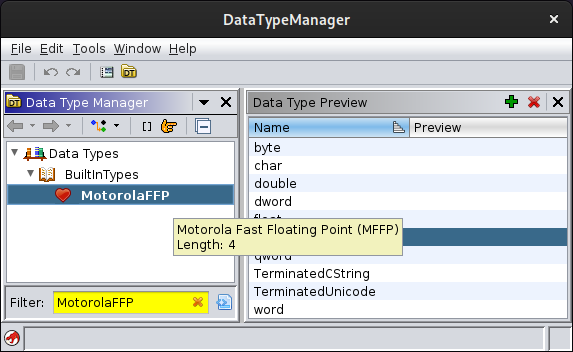
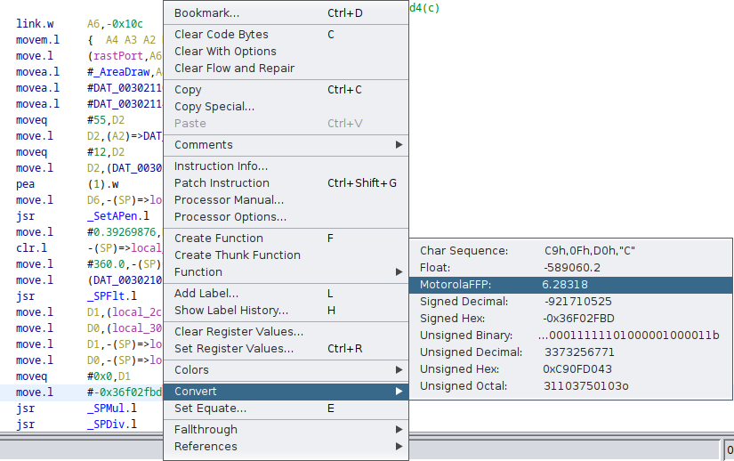
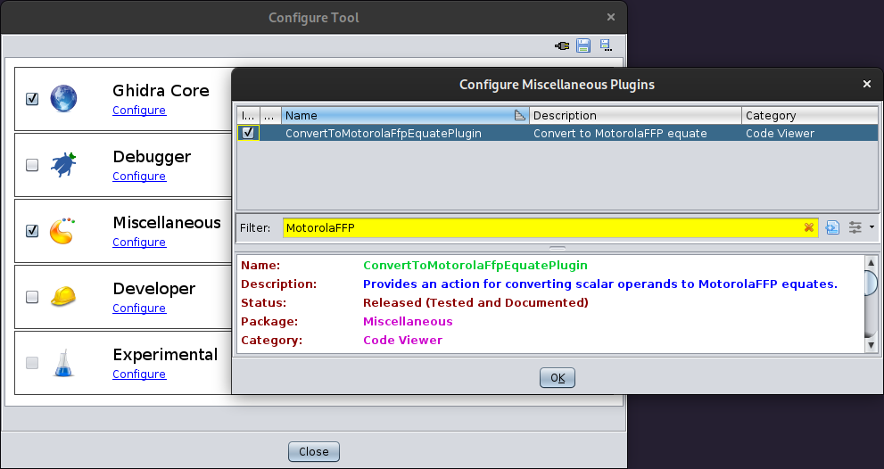

The MotorolaFFP extension adds a new built-in data type MotorolaFFP for the Motorola Fast Floating Point (MFFP) format.
The MotorolaFFP extension also provides a new ConvertToMotorolaFfpEquate plug-in, which allows you to convert scalar operands to MotorolaFFP equates in the Listing window of the CodeBrowser.
This format is used in the MC68343 Floating Point Firmware, which is included in the Commodore Amiga ROM Operating Systems from the very beginning and part of the mathffp.library.
NOTE: The Amiga ROM Kernel Reference Manual documents the exponent to be stored as two's complement value in excess-64 format. If you handle the encoded exponent as an unsigned value, the bias is 65.
Installing the MotorolaFFP extension adds a new built-in data type:

If you use the MotorolaFFP data type in a shared project/program, all users have to install the MotorolaFFP extension to avoid getting a -MISSING-MotorolaFFP data type in the program's data type archive.
With the enabled ConvertToMotorolaFfpEquate plug-in,
you can convert scalar operands in the Listing window of the
CodeBrowser into equates:

Deleting the equate is provided by Ghidra's Equate plug-in.
If you missed the New Plugins Found! dialog,
you can enable/disable the ConvertToMotorolaFfpEquate plug-in
with the menu entry File / Configure... in the CodeBrowser.
The plug-in can by found in the Miscellaneous category.
